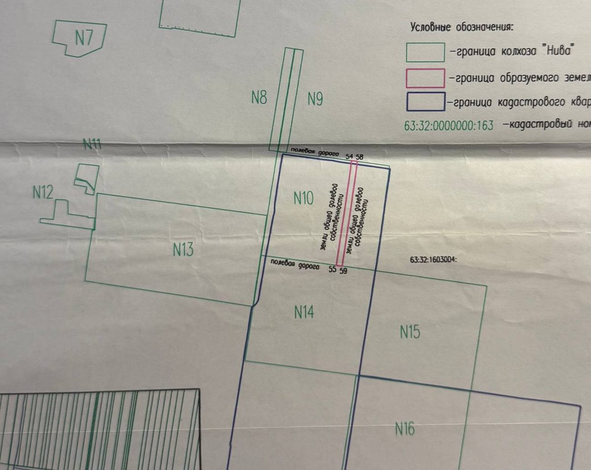
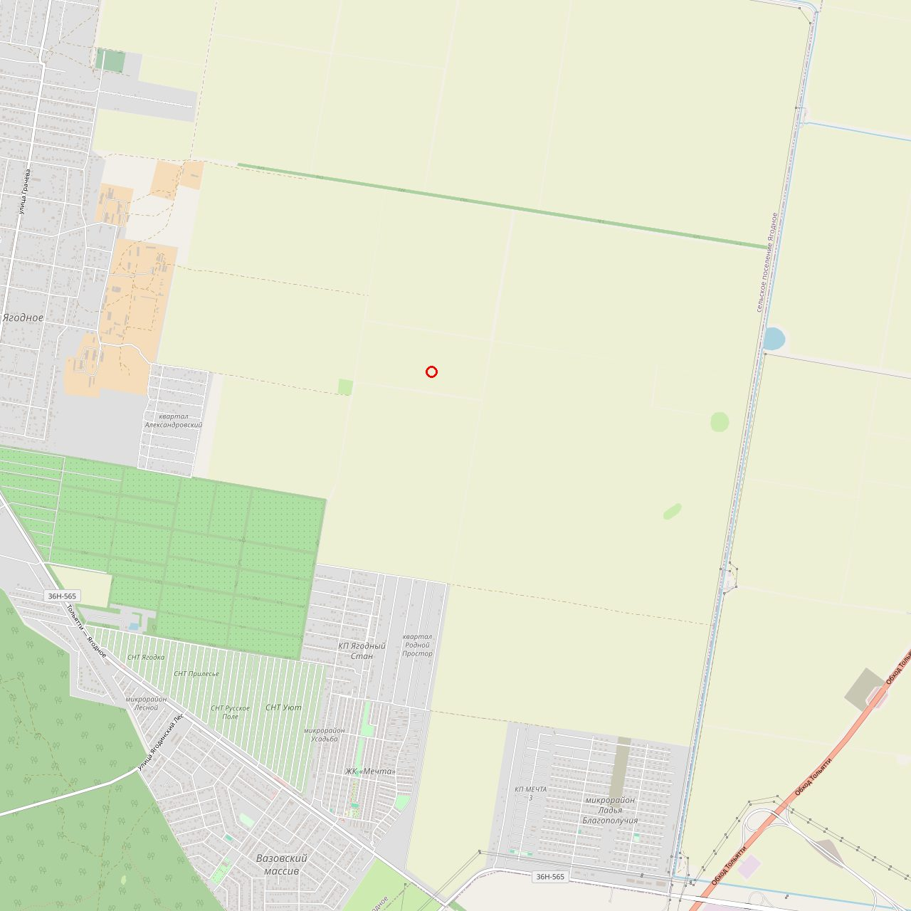

Поле №18 · с.п. Ягодное · полная картина на 20.09.2026
Поле №18. Всё, что знаем, все возможности, все проблемы
Семья держит 11,2 га в поле на 104 га между растущим селом и Обходом Тольятти. Актив стоит 3 млн ₽ как сельхозка и в 20-30 раз больше как жильё, но путь между этими цифрами лежит через Минсельхоз, 22 паевых семьи и пять подписей внутри нашей. За 14 недель до конца года перевести землю нельзя. Занять позицию - можно, и с 22 сентября тётя Нина уже идёт в администрацию.
Собрано из: разборы 18-19.09, совет-инквизитор 19.09, таблица дольщиков, kadbase (ЕГРН 08-11.09), 52-ФЗ от 01.04.2025, чаты с мамой в Telegram (01.09-20.09) и WhatsApp (28.08-19.09), чат с Никитой (25.08-16.09). Голосовые мамы от 01.09, 02.09, 04.09 не расшифрованы. Всё, что помечено «оценка», не подтверждено документами.
Что нового из чатов с мамой
Одиннадцать фактов, которых не было в прошлых версиях
| Дата | Что сказала мама (или тётя Нина через неё) | Что это меняет |
|---|---|---|
| 20.09 TG | «Тёте Нине сказали, что больше половины уже умерли. Она в понедельник поедет в администрацию Ягодного и постарается узнать новых хозяев» | Первый живой шаг на месте - 22.09. Ей нужен список вопросов и правило: не говорить «продаём», говорить «наводим порядок в документах». Администрация поселения = источник наследников и одновременно утечка намерений |
| 08.09 WA | «Тётя Нина вроде нашла людей с нашего поля, все согласны, и рядом с нашим полем уже строительство идёт» | Дольщики хотят продать - опционы будут дешёвыми. Но «все согласны продать» значит «все продавцы, покупателя нет»: цена без консолидатора падает |
| 08.09 WA | «Люди с других полей узнали, там ещё есть поля, они тоже хотят продать» | Массив может быть больше 104 га - для девелопера это плюс (фронт по дороге), для нас - конкуренция паёв за одного покупателя |
| 01.09 TG | «Там очень много фамилий из элиты бывшего Ягодного. Шоков - агроном или кто-то, у Шокова вообще 30 гектаров. Не понимаю, почему они не заинтересованы в продаже, может какую-то цель преследуют» | Шоков А.И. - председатель собрания выдела 2009 и держатель 30 га. Кандидат №1 на роль «кто знает про генплан» и «кто консолидирует». Элита, которая не продаёт, - либо ждёт включения, либо уже договорилась |
| 01.09 TG | «В 18 поле оказывается всего 15 человек» | По протоколу 2009 - 22 строки. Либо мама считала по другому списку, либо часть паёв уже объединена. Сверить, когда тётя Нина вернётся из администрации |
| 01.09 TG | «Судаков, председатель бывший, сам ничего не заработал и родственникам не давал. Колхоз разделили между водителями, зоотехниками, агрономами» | Контекст: паи розданы «своим», наследники не деревенские. Это упрощает выкуп и усложняет поиск |
| 04.09 WA | «120 000 пай они покупали, не гектар. 19 лет назад это были хорошие деньги, доллар был 30» | Историческая цена: ~21 т.р./га в 2007, ~$4 000 за пай. Сегодняшние 1,5 млн за пай - рост в 12 раз, кадастр - в 10. Аргумент для дольщиков: «за 19 лет цена выросла, и вырастет ещё, если действовать вместе» |
| 04.09 WA | «Если что, и я могу поехать в Тольятти. Давно собиралась к тёте Маше на могилу» | Мама готова ехать - это доверенность у нотариуса, выписки через Госуслуги, разговор с четырьмя совладельцами лично |
| 02.09 WA | «Надо всё решать там, на месте. Нужны сильные, грамотные люди» | Мама сама называет вакансию №1 - юрист на месте. Не будет сопротивления найму |
| 31.08 WA | «Я налог плачу каждый год за Ягодинскую землю» | Платит мама одна за пять долей? Значит, четверо совладельцев пассивны - и подпишут доверенность тому, кто «занимается» |
| 22.07 TG | «У меня арестовали все счета, вместо 2 000 рублей ещё 4 000 принесли» | Критично. У мамы исполнительное производство. Второе ограничение на участках может быть запретом регистрационных действий от приставов на её долю. Тогда её 1/3 не продать и не подарить, пока долг не закрыт |
Мама на пять вопросов из документа для неё ещё не отвечала: сам PDF до неё не дошёл, ушёл только текст. Первый разговор с ней - по этим пяти пунктам, до поездки тёти Нины.
Что знаем на 20.09
Факты одним листом
Наши участки
- Кадастр
- 63:32:1603003:1383 (уч. 14, бабушка, свид. 63-АЕ 018144 от 17.05.2010) и :1384 (уч. 15, дед, через суд 01.08.2011 оформлен на бабушку, свид. 63-АЖ 037477)
- Площадь
- 2 × 56 000 м² = 11,2 га, две смежные полосы 55 × 1 020 м, ~10,7% поля
- Категория
- с/х назначения, для с/х производства. Кадастровая стоимость 207 тыс ₽ за участок (37 т.р./га)
- ЕГРН сейчас
- 5 собственников (1/3 + 4 × 1/6) - родственники, наследство оформлено (со слов Стаса 20.09). 2 действующих ограничения на каждом: одно - аренда фермеру, второе неизвестно (гипотеза: запрет регдействий на долю мамы) + 2-3 в архиве
- В продаже
- объявление «1 500 т.р. за участок», риелтор Пичкурова. 268 т.р./га, в 7 раз выше кадастра. Кто из пяти дал - неизвестно
- История
- 2007: пай покупали за 120 000 ₽ (~$4 000). Налог за землю каждый год платит мама
- Подъезд
- полевые дороги с севера и юга блока N10 по межевому плану, грунт
Поле и соседи
- Поле №18
- 22 пая, ~104 га, протокол выдела 05.06.2009 (председатель собрания Шоков А.И.). Крупные: Мякоткина 11,2 га, Платковская 11,2, Замотин 9,1, Щеглова 5,6 (смежник)
- Титулы
- 19 из 22 - один собственник, ноль ограничений (наследники оформлены). Наши два - самые грязные на поле
- Движение
- новые крупные участки: з/у 449 (11,2 га, 2020), 55 998 м² (2021), з/у 530 (9,1 га, 08.2024), з/у 527 (8,4 га, 2012, смежный с нами). Кто-то собирает
- Место
- ~53.60 N 49.09 E, между кварталом Александровский и Обходом Тольятти. Село: 2 630 жителей (2007) -> 14 068 (2025). К востоку - пивоты орошения агрохолдинга
- Рынок
- ИЖС Ягодное: 70-90 т.р./сот без сетей, 150-270 в готовом КП, 59 объявлений на Циан

Где это
Поле между селом и Обходом Тольятти, вокруг уже строят


Село растёт
Ягодное: 2 630 жителей в 2007, 14 068 в 2025. Один из самых быстрорастущих пригородов Тольятти. Тётя Нина: «рядом с нашим полем уже идёт строительство».
Квартал уже жилой
В квартале 63:32:1603003 больше 2 000 участков. ППТ на участок :3 - постановление №123 от 22.12.2021; слушания по ИЖС на :4743 - 2022. Включение в этом квартале уже проходили.
Подъезд есть
К блоку N10 с севера и юга примыкают полевые дороги. Грунт, но не тупик посреди чужого поля. Фронта по асфальту нет - девелоперу нужен блок от Александровского.
Поле целиком
22 пая по протоколу 2009, кадастр снят по 21. Мама насчитала 15 человек
| Уч. | Собственник по протоколу 2009 | Га | Кадастровый номер | ЕГРН, 09.2026 | Роль в плане |
|---|---|---|---|---|---|
| 1 | Первова Л. А. | 3,468 | 63:32:1603003:1387 | 1 собств. · 0 огр. | |
| 2 | Борисова В. Г. | 5,6 | 63:32:1603003:1382 | 1 собств. · 0 огр. | смежник с новым участком 2021 |
| 3 | Журавлева К. П. | 5,6 | 63:32:1603003:1385 | не снято | |
| 4 | Тарасов С. И. | 3,468 | 63:32:1603003:1388 | не снято | |
| 5 | Тарасова Г. П. | 3,468 | 63:32:1603003:1386 | не снято | |
| 6 | Рыбкина О. П. | 5,6 | 63:32:0000000:8642 | 1 собств. · 0 огр. | |
| 7 | Журавлева В. Л. | 1,866 | 63:32:1603003:1396 | не снято | |
| 8 | Окатьев А. Л. | 3,733 | 63:32:0000000:8633 | 1 собств. · 0 огр. | смежник з/у 449 (2020) |
| 9 | Карцева О. Б. | 5,6 | 63:32:0000000:8643 | не снято | |
| 10 | Капленкова А. Д. | 2,8 | 63:32:1603003:1389 | не снято | |
| 11 | Веселов В. Д. | 2,8 | 63:32:0000000:8639 | не снято | |
| 12 | Мякоткина Е. Н. | 11,2 | 63:32:0000000:8638 | 1 собств. · 0 огр. | крупный, первый на опцион |
| 13 | Семушина Л. Н. | 5,6 | 63:32:0000000:8634 | 1 собств. · 0 огр. | |
| 14 | Асташкина Е. Т. (бабушка) | 5,6 | 63:32:1603003:1383 | 5 собств. · 2 огр. | наш |
| 15 | Асташкин Г. И. (дед) | 5,6 | 63:32:1603003:1384 | 5 собств. · 2 огр. | наш |
| 16 | Щеглова А. И. | 5,6 | 63:32:1603003:1391 | 1 собств. · 0 огр. | смежник, первый на опцион |
| 17 | Ерашкова М. С. | 1,866 | 63:32:1603003:1392 | не снято | |
| 18 | Шиманова А. С. | 1,866 | 63:32:0000000:8644 | 1 собств. · 0 огр. | |
| 19 | Ануфриева А. С. | 1,866 | 63:32:0000000:8647 | не снято | |
| 20 | Досова Г. М. | 3,47 | 63:32:0000000:8646 | 1 собств. · 0 огр. | смежник з/у 530 (2024) |
| 22 | Платковская Е. Ф. | 11,2 | 63:32:0000000:8645 | 2 собств. по ½ · 0 огр. | крупный, смежник з/у 530 |
| 23 | Замотин А. В. | 9,07* | 63:32:1603003:1381 | 2 собств. по ½ · 0 огр. | крупный |
Фамилии - Приложение №2 к протоколу выдела 05.06.2009 (сдвиг строк в скане выровнен по нашим свидетельствам). Кадастр - kadbase.ru. * По кадастру уч. 23 = 56 000 м². «Не снято» - лимит запросов. Шокова (30 га) в поле №18 нет: его паи в других полях, он председатель собрания 2009.
Закон · 52-ФЗ от 01.04.2025
Новые правила для нашего пути действуют с 1 марта. 1 января 2027 закрывает обходные. Дата X - без числа
- генплан, включающий угодья в границы населённого пункта, согласует Минсельхоз РФ (ПП №1143). Это наш путь, и Москва уже на нём
- перевод сельхозземель: ходатайство в область, согласие губернатора, закон области, для угодий - заключение Минсельхоза
- границы угодий устанавливает Минсельхоз с графикой в ЕГРН (ПП №1943)
- перевод угодий - только 5 оснований: консервация/загрязнение, ООПТ, границы населённого пункта, гособъекты без альтернативы, недра
- частная промка, ИЖС «переводом участка», КФХ-схемы - закрыты. У нас их и не было
- переходных положений нет: рассматривают по правилам на день решения, не подачи
- Минсельхоз утверждает границы угодий по Самарской области - поле №18 в ЕГРН как «угодья»
- область вносит поле в перечень особо ценных продуктивных угодий - выход невозможен вообще
- орошение рядом = мелиорация = кандидат в особо ценные
Минсельхоз - одно окно на всю страну, мандат - не отдавать угодья. Самим туда не ходить. Рабочих обхода два: подцепиться к корректировке генплана, которую область везёт в Москву пакетом поселений (если район сейчас правит генплан Ягодного), или продать блок тому, у кого ход в область уже есть (девелопер соседних КП, агрохолдинг с пивотами). Стена - его проблема, наша - цена.
«Успеть до 2027» на практике: (1) семья одним голосом, (2) поле под контролем через опционы, (3) заявка на корректировку генплана от инициатора с деньгами зарегистрирована, (4) область знает, что поле №18 - под жильё. Не «утвердить генплан» - это 9-15 месяцев в идеале, 1,5-3 года по практике.
Возможности
Девять возможностей. Первые три не требуют ни рубля
| # | Возможность | Почему реальна | Что нужно | Ценность (оценка) |
|---|---|---|---|---|
| 1 | Дольщики хотят продать | тётя Нина 08.09: «все согласны»; наследники не деревенские, паи им - бумажка | форма опциона от юриста, задаток 50-150 т.р. за пай, срок 12-18 мес | контроль над 50%+ поля за 1-2 млн задатков, не наших |
| 2 | Тётя Нина знает всех и уже идёт в администрацию | 22.09 поездка за новыми хозяевами; раньше решала всё через главбуха Ягодного | список вопросов ей в руки до понедельника, легенда «наводим порядок» | карта поля за 2-3 недели вместо 2-3 месяцев |
| 3 | Мама готова ехать в Тольятти | 04.09: «и я могу поехать»; платит налог одна, четверо пассивны | нотариус, Госуслуги, разговор с четырьмя лично | чистый титул за месяц |
| 4 | Шоков и «элита», которая не продаёт | председатель собрания 2009, 30 га, знает, куда идёт генплан | один разговор через тётю Нину: «почему не продаёте» | ответ на «дату X» и на «кто консолидатор» бесплатно |
| 5 | Квартал уже включали | ППТ 2021 на :3, слушания 2022 на :4743, Александровский рядом | выписка на любой участок внутри Александровского - кто провёл | готовый партнёр с ходом в область |
| 6 | Кто-то собирает поле (з/у 449, 530, 527) | крупные участки сформированы в 2020-2024 рядом с нашими | выписки о переходе прав по трём номерам | покупатель блока с торгом от 3 млн вверх, если он есть |
| 7 | Соседние поля тоже продаются | 08.09: «люди с других полей тоже хотят» | только после карты поля №18 | для девелопера массив 150-200 га с фронтом - другой класс актива |
| 8 | Преимущественное право (ст. 250 ГК) | если кто-то из пяти продаёт долю чужому - мама выкупает первой | юрист, деньги на выкуп 1/6 (оценка 250-400 т.р.) | не пустить чужого внутрь участка |
| 9 | Продать блоком с чистым титулом | даже стоп-сценарий: два чистых участка + опционы соседей стоят дороже, чем два грязных с объявлением | всё из п. 1-3 | 3-4,5 млн + опцион вместо 1,4-2,5 сейчас |
Общий знаменатель: все девять - про информацию и подписи, не про деньги. Деньги (генплан 2-5 млн, сети 40-70 т.р./сот) - партнёра. Наш вклад - 11,2 га, контроль над полем и организация.
Проблемы
Пятнадцать блоков. Три новых - из чатов с мамой
| # | Проблема | Почему это блок | Что снимает | Кто | Срок |
|---|---|---|---|---|---|
| 1 | 5 совладельцев на каждом участке | любая сделка, опцион, доверенность - 5 подписей; один несогласный = вето | одна нотариальная доверенность от пятерых на юриста; мама - доверитель | мама, юрист | до 12.10 |
| 2 | 2 ограничения неизвестного вида | если залог/арест - стоп; аренда на годы - фермер блокирует | выписки ЕГРН (объект + переход прав); договор аренды из рук мамы | мама | до 05.10 |
| 3 | НОВОЕ. Долги мамы: арест счетов 22.07 | исполнительное производство = вероятный запрет регдействий на её 1/3. Доля не продаётся и не дарится, пока долг не закрыт; приставы могут обратить взыскание на долю | проверить на сайте ФССП по ФИО; выписка покажет «запрет» и номер производства; закрыть долг до любой сделки | Стас, мама | до 28.09 |
| 4 | Объявление за 1,5 млн висит публично | открытый резервейшн: консолидатор знает, что семья готова на 1,5 | снять; узнать, кто из пяти дал и что обещал риелтору | мама | до 28.09 |
| 5 | НОВОЕ. Тётя Нина идёт в администрацию с легендой «продаём» | администрация поселения = те же люди, что знают девелоперов и скупщиков. «Все согласны продать» дойдёт до покупателя раньше нас | до понедельника - другая легенда: «наследство, порядок в документах, ищем хозяев паёв». Список вопросов ей в руки | Стас через маму | до 21.09 |
| 6 | Стас за границей | всё через третьих лиц; девелопер: «семьи за границей соглашаются на первую цифру через два года» | юрист по земле в Тольятти как представитель; недельный отчёт одной страницей | Стас | до 12.10 |
| 7 | НОВОЕ. 15 человек или 22 пая | если мама права, часть паёв уже объединена или перепродана - консолидатор есть и мы его не видим | тётя Нина после администрации: сверить со списком на листе 5 | тётя Нина | до 05.10 |
| 8 | Полоса 110 м без фронта по дороге | девелоперу отдельно не нужна; заходит блоком от 25-30 га | опционы с соседями по блоку N10 (Щеглова, з/у 527) и крупными паями | юрист, тётя Нина | ноябрь |
| 9 | Поле может попасть в угодья / особо ценные | тогда включение невозможно, актив = сельхозка навсегда | запросы: Минсельхоз области, перечень особо ценных, реестр мелиорированных | юрист | до 26.10 |
| 10 | Неизвестно, идёт ли корректировка генплана | своя - 2-5 млн и 1,5-3 года; чужая - подцепиться за месяцы | запрос в архитектуру м.р. Ставропольский; разговор с Шоковым | юрист, тётя Нина | до 26.10 |
| 11 | Кто-то уже собирает поле (з/у 449, 530, 527) | если у него 50%+ - мы продавец ему, не консолидатор | выписки о переходе прав; обзвон паёв | тётя Нина, ходок | до 26.10 |
| 12 | Нет юриста и нет ходока | без рук на месте план не исполняется; мама сама: «нужны сильные грамотные люди» | 3 кандидата юриста (сельхозземли, 101-ФЗ, генплан); ходок с машиной | Стас, Катя | до 05.10 |
| 13 | Никита: 3 недели «непростой вопрос» | 16.09 в Бишкеке занят ВНЖ и шенгеном, по земле ноль | один письменный вопрос «что у тебя есть под это»; пакет после ответа | Стас | до 28.09 |
| 14 | Партнёр с деньгами не найден | генплан + сети - не наши деньги по принципу | кто провёл Александровский; девелоперы соседних КП | Стас, юрист | ноябрь |
| 15 | Рубли в РФ у мамы vs €1M на Кипре | семье треть, в рублях, через годы; путь на Кипр не решён; при аресте счетов мамы деньги от продажи уйдут приставам | сначала п. 3; потом /buh; в €1M не считать | Стас | 2027 |
Честная граница
За 14 недель нельзя перевести землю. Можно занять позицию
Не успеть до 31.12.2026
- утвердить изменения генплана: заявление, проектировщик, ФГИС ТП, Минсельхоз, слушания, Собрание - 9-15 месяцев в идеале
- ПЗЗ (зона Ж1) и ППТ - после генплана
- продать хоть один участок как ИЖС
- «зафиксировать» что-либо подачей до 2027: переходных положений в законе нет
- обойти Минсельхоз своими силами: одно окно, мандат «не отдавать»
Всё это - 2027-2028 в лучшем случае, и не нашими деньгами.
Успеть до 31.12.2026
- чистый титул: понять ограничения, закрыть долг мамы, снять объявление, одна доверенность от пяти
- карта поля: тётя Нина + администрация + обзвон: кто жив, кто наследник, кто продаёт, кто скупает
- ответ на «дату X» и на генплан: 4 запроса юриста + разговор с Шоковым
- опционы с крупными и смежными паями: 50%+ площади под одним голосом
- партнёр-девелопер с письменными условиями
- заявление о внесении изменений в генплан от инициатора - зарегистрировано
- либо стоп по критериям: продать блоком одному покупателю от 3 млн вверх
Почему заявление до конца года всё же важно, хотя закон его не фиксирует. Границы угодий Минсельхоз утверждает по предложениям области. Поле, которое уже стоит в проекте корректировки генплана под жильё, области проще исключить из угодий, чем поле, о котором никто не заявил. Это оценка, не норма - проверить у юриста.
Сценарии и деньги
Четыре способа монетизировать. Разница в роли, не в земле
А. Продать сейчас как есть
Б. Блок консолидатору + опцион
В. Консолидатор с партнёром
Г. Девелопмент самому
Что говорят покупатели сегодня (оценка риэлтора и девелопера)
- фермер-арендатор: 0,45-0,9 млн за оба
- скупщик паёв: 1,1-2,8 млн
- девелопер за примыкающую землю: 3,4-6,7 млн (наша не примыкает к дороге)
- опцион после Ж1: 0,3-0,5 млн сейчас + 8-12 млн после
- для сравнения: 2007 - 120 т.р. за пай; кадастр 2023 - 207 т.р.; объявление 2026 - 1,5 млн
К €1M это не относится, пока
- в любом сценарии семье 1/3, остальное - четырём совладельцам
- рубли, в РФ, на счетах резидентов; у мамы счета под арестом - деньги уйдут приставам, пока долг не закрыт
- нерезидент при продаже своей доли - 30% НДФЛ; резиденты-наследники после 3 лет - без НДФЛ
- в трекере €1M поле учитывать нулём до договора с партнёром или денег от блока
- цена проекта для трека продаж Q4: 2-3 часа в неделю. Перерасход - стоп-критерий
Календарь
14 недель, два поворота. Неделя 1 уже началась: тётя Нина в понедельник в администрации
| Нед. | Даты | Что сделано к воскресенью | Кто |
|---|---|---|---|
| 0 | 20-21.09 | Срочно. Маме: список вопросов для тёти Нины в администрацию (лист 13) и легенда «наследство, порядок в документах» вместо «продаём». Проверить маму на сайте ФССП. Пять вопросов маме голосом, не PDF. | Стас |
| 1 | 22-28.09 | Тётя Нина: результат из администрации - новые хозяева паёв, сверка «15 или 22». Мама: кто четверо, доли, кто дал объявление, договор аренды. Заказаны выписки ЕГРН на :1383, :1384, :1391, з/у 527. Объявление снято. Никите один письменный вопрос. | тётя Нина, мама, Стас |
| 2 | 29.09-05.10 | Выписки прочитаны: вид, срок, бенефициар ограничений; есть ли запрет от приставов. Три кандидата юриста в Тольятти. Семейный созвон пятерых: согласие на одну доверенность. Разговор с Шоковым через тётю Нину. | Стас, Катя, тётя Нина |
| 3 | 06-12.10 | Юрист выбран. Мама едет в Тольятти: нотариальная доверенность от пяти. Юрист отправляет 4 запроса (лист 12). Долг мамы закрыт или план закрытия. | юрист, мама |
| 4 | 13-19.10 | Тётя Нина + ходок: обзвон паёв (жив / наследник / оформлено / продаёт / цена). Дозагружены 9 паёв «не снято». Переходы прав по з/у 449, 530, 527. | тётя Нина, ходок |
| 5 | 20-26.10 | Ответы администрации и Минсельхоза. Кто провёл Александровский. Карта поля готова: кто держит, кто продаёт, есть ли консолидатор. | юрист |
| 6 | 27.10-02.11 | Поворот 1. Поле в угодьях / залог-арест / долг мамы не закрывается - стоп, продаём блоком. Консолидатор с 50%+ есть - сценарий Б. Ничего из этого - сценарий В. | Стас |
| 7 | 03-09.11 | Юрист: форма опциона с дольщиком (цена, срок 12-18 мес, задаток). Список 2-3 девелоперов. | юрист |
| 8 | 10-16.11 | Встречи с девелоперами (юрист очно, Стас по видео). Предложение письменно: «блок под одним голосом, паи законтрактованы, поле не в угодьях». | Стас, юрист |
| 9 | 17-23.11 | Опционы с первыми 5-8 паями: Мякоткина, Платковская, Замотин, Щеглова, з/у 527. | юрист, тётя Нина |
| 10 | 24-30.11 | Партнёр: условия на бумаге - кто платит проект генплана, сети, как делим. | Стас |
| 11 | 01-07.12 | Поворот 2. Опционы на 50%+ и партнёр с условиями - идём на заявление. Партнёра нет - продаём блок с опционами или закрываем. | Стас |
| 12 | 08-14.12 | Заявление о внесении изменений в генплан с.п. Ягодное от инициатора - зарегистрировано. | юрист, партнёр |
| 13 | 15-21.12 | Договор с партнёром подписан. Или: сделка по блоку закрыта. | Стас, юрист |
| 14 | 22-31.12 | Итог года одной страницей: позиция семьи, % поля под контролем, номер заявления, ноль своих рублей в генплан. | Стас |
Дата X
Четыре запроса юриста и один разговор тёти Нины
| Куда | Что спросить | Что означает ответ |
|---|---|---|
| Минсельхоз Самарской области | подготовлены ли предложения по границам угодий (ПП №1943); входит ли квартал 63:32:1603003, поле №18; срок направления в Минсельхоз РФ | в проекте - месяцы, не годы; утверждено - только продажа |
| Правительство / Минсельхоз области | перечень особо ценных продуктивных угодий: есть ли поле №18 или колхоз «Нива» | есть - стоп |
| Управление мелиорации | числится ли поле №18 или смежные в мелиорированных землях | числится - кандидат в особо ценные, стоп |
| Архитектура м.р. Ставропольский + с.п. Ягодное | действующий генплан и ПЗЗ; идёт ли корректировка; проектировщик; поле №18 в перспективных границах; как включили Александровский | корректировка идёт - подцепиться; нет - инициатор платит и ждёт |
Разговор с Шоковым (через тётю Нину, без юриста)
- «Почему вы и другие крупные не продаёте? Ждёте чего-то?»
- «Кто в 2020-2024 собирал большие участки рядом с полем №18?»
- «Администрация говорила про генплан, про включение полей в село?»
- «Если бы поле переводили под жильё - вы бы вошли с паем или продали?»
Он подписывал протокол выдела 2009 как председатель собрания, держит 30 га и, по словам мамы, «преследует какую-то цель». Его ответ стоит больше четырёх запросов.
Правило. Ни одного опциона, ни рубля задатка, ни встречи с девелопером - до ответа по первым трём строкам. Иначе собираем поле, которое нельзя вывести.
Люди
Кто есть, кого нет, и что тёте Нине спросить в понедельник
| Кто | Роль | Статус 20.09 |
|---|---|---|
| Стас | организатор, развилки | 2-3 ч/нед |
| Мама | доверитель, связь с четырьмя | готова ехать в Тольятти; счета под арестом |
| 4 совладельца | подписанты доверенности | родственники, имена не известны, пассивны |
| Тётя Нина | связь с дольщиками, ходок №1 | 22.09 в администрации Ягодного |
| Шоков А.И. | источник по генплану и консолидатору | 30 га, не продаёт, «цель» |
| Катя | поиск юриста и ходока | «готова», задач нет |
| Юрист по земле, Тольятти | главный человек проекта | вакансия №1 |
| Ходок с машиной | 22 пая, нотариус, документы | вакансия №2 |
| Никита Кондратьев | не определена | Бишкек, ВНЖ/шенген, по земле ноль |
| Илья | ? | 16.09 не ответил |
| Автор голосовых 17.09 | ? | неизвестен |
| Зам мэра Тольятти | выход на девелоперов, не на генплан | знакомство обещано 01.09 |
| Партнёр-девелопер | платит генплан и сети | не найден |
Тёте Нине в администрацию 22.09 - что спросить
- Легенда: «оформляем наследство, наводим порядок в документах по полю №18, ищем хозяев паёв». Слово «продаём» не произносить.
- По списку из 22 фамилий (лист 5): кто умер, кто наследник, где живёт, телефон.
- Кто платит земельный налог по паям поля №18 сейчас - это и есть реальные хозяева.
- Кто арендует поле №18, договор с кем, до какого года.
- Кто оформлял большие участки рядом в 2020, 2021, 2024 (з/у 449, 530).
- Идёт ли работа над генпланом Ягодного, кто проектировщик, где вывешены материалы.
- Шоков: как связаться.
Записать всё сразу после разговора голосовым маме - через день детали уходят.
Стоп-критерии и решения
Когда закрывать, и что решить до понедельника
Стоп - продавать блоком и закрывать
- поле в границах угодий, в особо ценных или в контуре мелиорации
- ограничение - залог, арест или аренда на годы; долг мамы не закрывается
- из пяти совладельцев хотя бы один отказывается от доверенности после двух разговоров
- кто-то уже держит 50%+ поля
- к 07.12 нет партнёра, готового обсуждать деньги на генплан
- проект тянет больше 3 часов в неделю или залезает в утренние часы трека продаж
Стоп - не поражение. Блок с чистым титулом и опционами на соседей стоит дороже, чем два грязных участка с объявлением. «Продать и закрыть» в декабре - лучше сентябрьской позиции.
Решить до понедельника 21.09
Материалы: projects/zemlya-yagodnoe/ - разборы 18-19.09, SOVET-2026-09-19.md, POLE-18-DOLSHCHIKI.md, сканы в docs/, две предыдущие презентации (13 и 10 листов). Закон: 52-ФЗ от 01.04.2025 (kremlin.ru, garant.ru), обзор Birch Legal, КонсультантПлюс.